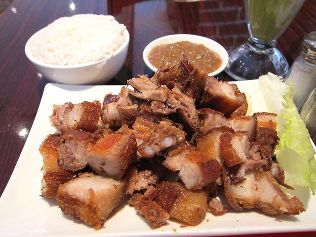

Crispy Pork Belly
Home

Photo by Jason Lam, under CC BY-SA
Description
Fast and easy Filipino-style crackling pork belly. Ready in just over an hour!
Ingredients:
- 700g pork belly cut into small pieces
- 3 cloves crushed garlic
- 2 bay leaves
- Half teaspoon salt
- Half teaspoon ground black pepper
- 2 cups oil for frying
Steps:
- Gather all ingredients.
- In a skillet, combine pork belly, garlic, bay leaves,
salt, and pepper. Pour in enough water to completely cover
and bring to boil. Reduce heat and simmer until skin is tender, around
35 to 45 mins.
- Drain and leave at room temperature until pork is dry.
- Using a large saucepan or deep fryer, heat the oil 175 degrees C.
- Working in batches, fry the pork for 3 to 5 minutes or until golden brown.
- Use a slotted spoon to remove the pork and drain on a plate lined with paper-towel.